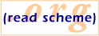

|  |
Reading list on XML and Web Programming
This reading list includes research related to XML and web programming in the context of functional programming languages, particularly Scheme, SML, and Haskell.
This site is maintained by Jim Bender. Please send suggestions for additions to this site to editor@readscheme.org.
- Jim Bender. "WebIt!: Embedding XML, HTML, and CSS in Scheme [Draft]". January 2004. Available online: html.
- Jim Bender. "Advanced Uses of Micros". January 2003. Available online: html.
- Jim Bender. "(X)Querying XML in Scheme". July 2003. Available online: html.
- Michael Bridgen, Noel Welsh, Matthias Radestock. "Scheme in The Real World: A Case Study". August 2003. Available online: pdf.
- Dæv Clarke. "Towards GH(XML) - Generic XML Processing". Generic Haskell Meeting. November 2001. Available online: pdf.
- John Clements, Paul T. Graunke, Shriram Krishnamurthi and Matthias Felleisen. "Little Languages and their Programming Environments". Proceedings of Monterey Workshop 2001. 2001. Available online: pdf.
- John Clements, Shriram Krishnamurthi, Matthias Felleisen. "Little Languages and their Programming Environments ". Rice University. TR 99-350. 1999. Available online: pdf ps.
- Martin Elsman and Niels Hallenberg. "SMLserver - A Functional Approach to Web Publishing". Royal Veterinary and Agricultural University of Denmark and IT University of Copenhagen. February 2002. Available online: ps pdf.
- Matthias Felleisen. "Developing Interactive Web Programs". Summer School on Advanced Functional Programming 2002. August 2002. Available online: ps.
- Paul T. Graunke. "Web Interactions". PhD. Thesis. Northeastern University. 2003. Available online: ps pdf.
- Paul T. Graunke, Robert B. Findler, Shriram Krishnamurthi, Matthias Felleisen. "Modeling Web Interactions". European Symposium on Programming (ESOP). April 2003. Available online: ps pdf.
- Paul T. Graunke, Shriram Krishnamurthi, Van der Hoeven and Matthias Felleisen. "Programming the Web with High-Level Programming Languages". Proceedings of ESOP 2001. 2001. Available online: ps pdf.
- Paul T. Graunke, Robert B. Findler, Shriram Krishnamurthi, Matthias Felleisen. "Automatically Restructuring Programs for the Web". Automated Software Engineering 2001. 2001. Available online: ps pdf.
- Mikael Hansen, Paw Iversen and Jimmy Juncker. "SLAML - Server side LAML". Masters Thesis. Aalborg University. June 2002. Available online: ps.
- Mikael Hansen, Paw Iversen and Jimmy Juncker. "SLAML - Server side LAML (Preliminary Masters Thesis Report)". Aalborg University. January 2002. Available online: ps.
- Carsten Hellegaard. "POWER - Program Oriented Web EngineeRing". Masters Thesis. Aalborg University. June 2000. Available online: ps pdf.
- Peter Walton Hopkins. "Enabling Complex UI In Web Applications With send/suspend/dispatch". Scheme Workshop 2003. November 2003. Available online: ps pdf.
- Timothy J. Hickey. "Jscheme Web Programming for CS0". Brandeis University. CS-02-223. January 2002. Available online: ps.
- Haruo Hosoya and Benjamin C. Pierce. "Regular expression pattern matching for XML". 25th Annual ACM SIGPLAN-SIGACT Symposium on Principles of Programming Languages. January 2001. Available online: ps ps.
- Haruo Hosoya. "Regular Expression Types for XML". PhD. Thesis. University of Tokyo. December 2000. Available online: ps.
- Haruo Hosoya, Jerome Vouillon and Benjamin C. Pierce. "Regular expression types for XML". International Conference on Functional Programming (ICFP 2000). September 2000. Available online: ps ps.
- Haruo Hosoya and Benjamin C. Pierce. "XDuce: A typed XML processing language". Proceedings of Third International Workshop on the Web and Databases (WebDB2000). Lecture Notes in Computer Science vol. 1997. May 2000. Available online: ps ps.
- Johan Jeuring and Paul Hagg. "Generic Programming for XML Tools". Utrecht University. Technical report UU-CS-2002-023. 2002. Available online: pdf.
- Oleg Kiselyov and Shriram Krishnamurthi. "SXSLT: Manipulation Language for XML". Practical Aspects of Declarative Languages (PADL'03). January 2003. Available online: slides.
- Oleg Kiselyov and Kirill Lisovsky. "XML, XPath, XSLT implementations as SXML, SXPath, and SXSLT". International Lisp Conference (2002). September 2002. Available online: pdf talk (pdf).
- Oleg Kiselyov. "A better XML parser through functional programming". Fourth International Symposium on Practical Aspects of Declarative Languages (PADL '02). January 2002. Available online: ps slides.
- Oleg Kiselyov. "The SXML Specification, Revision 2.5". September 2002. Available online: html.
- Oleg Kiselyov. "Literate XML/DTD programming". April 2001. Available online: html.
- Oleg Kiselyov. "HTML/XML authoring in Scheme". February 2001. Available online: html.
- Oleg Kiselyov. "XML and Scheme". A micro-talk presentation at a Workshop on Scheme and Functional Programming 2000. September 2000. Available online: html.
- Shriram Krishnamurthi. "The Continue Server (or, How I Administered PADL 2002 and 2003)". Practical Aspects of Declarative Languages (PADL'03). January 2003.
- Oleg Kiselyov. "Implementing Metcast in Scheme". Scheme and Functional Programming 2000. September 2000. Available online: ps pdf.
- Shriram Krishnamurthi, Kathryn E. Gray and Paul T. Graunke. "Transformation-by-Example for XML". Practical Aspects of Declarative Languages (PADL 2000). 2000.
- Xavier Leroy and François Rouaix. "Security properties of typed applets". POPL'98. 1998. Available online: ps.
- Bruce R. Lewis. "BRL: A database-oriented language to embed in HTML and other markup". June 2001. Available online: pdf.
- Kirill Lisovsky. "Scheme-based XML Application Server". Workshop on Advanced Functional Programming (AFP'2002). August 2002.
- Kirill Lisovsky, Dmitry Lizorkin. "Namespaces in XML and SXML". Russian Digital Libraries Journal. Vol. 6 - No 3. 2003. Available online: html.
- Kirill Lisovsky, Dmitry Lizorkin. "SXML: an XML document as an S-expression". Russian Digital Libraries Journal. Vol. 6 - No 2. 2003. Available online: html.
- Kirill Lisovsky, Dmitry Lizorkin. "XML Path Language (XPath) and its functional implementation SXPath". Russian Digital Libraries Journal. Vol. 6 - No 4. 2003. Available online: html.
- Kirill Lisovsky, Dmitry Lizorkin. "XSLT and XLink and their implementation with functional techniques". Russian Digital Libraries Journal. Vol. 6 - No 5. 2003. Available online: html.
- Kirill Lisovsky. "Scheme program souce code as a semistructured data". 2nd Workshop on Scheme and Functional Programming. September 2001. Available online: ps pdf.
- Jacob Matthews, Robert B. Findler, Paul T. Graunke, Shriram Krishnamurthi, Matthias Felleisen. "Automatically Restructuring Software for the Web". Journal of Automated Software Engineering. 2004. Available online: ps pdf.
- Erik Meijer and Danny van Velzen. "Haskell Server Pages: Functional Programming and the Battle for the Middle Tier". Proc. Haskell Workshop 2000. 2000. Available online: pdf.
- Erik Meijer. "Server side web scripting in Haskell". Journal of Functional Programming. 10(1). January 2000. Available online: pdf.
- Erik Meijer and Mark Shields. "XMLambda: A functional language for constructing and manipulating XML documents". December 1999. Available online: ps.
- Erik Meijer, Daan Leijen and Jim Hook. "Client-side Web Scripting with HaskellScript". Proc. PADL, 1999. 1999. Available online: pdf.
- Erik Meijer and Joost van Dijk. "Perl for swine: CGI programming in Haskell". Proc. First Workshop on Functional Programming. 1996.
- David Mertz. "Transcending the limits of DOM, SAX, and XSLT: The HaXml functional programming model for XML". IBM developerWorks (XML Matters column). Available online: html.
- Danius Michaelides, Luc Moreau and David DeRoure. "A Uniform Approach to Programming the World Wide Web". Computer Systems Science and Engineering. 14(2):69-91. 1999. Available online: ps.
- Andreas Neumann. "Parsing and Querying XML Documents in SML". PhD. Thesis. University of Trier. December 1999. Available online: ps pdf.
- Andreas Neumann. "fxp - Processing Structured Documents in SML". SFP'99. August 1999. Available online: ps pdf slides (ps) slides (pdf).
- Andreas Neumann. "Unambiguity of SGML Content Models - Pushdown Automata Revisited". 3rd Int. Conf. on the Developments in Language Theory (DLT'97). July 1997. Available online: ps pdf slides (ps) slides (pdf).
- Andreas Neumann. "Unambiguity of SGML Content Models - Pushdown Automata Revisited". 1997. Available online: ps pdf.
- Kurt Nørmark. "XML Transformation in Scheme with LAML - a Minimalistic Approach". International Lisp Conference 2003. October 2003. Available online: ps pdf.
- Kurt Nørmark. "The duality of XML Markup and Programming notation". IADIS WWW/Internet 2003. November 2003. Available online: pdf.
- Kurt Nørmark. "Web Programming in Scheme with LAML". April 2003. Available online: ps pdf.
- Kurt Nørmark. "XML in LAML - Web Programming in Scheme". August 2002. Available online: ps pdf.
- Kurt Nørmark. "Development of LAML - A Suite of Web Software for Scheme". May 2002. Available online: ps pdf.
- Kurt Nørmark. "Programming World Wide Web pages in Scheme". Sigplan Notices. vol. 34, no. 12. 1999. Available online: ps pdf.
- Kurt Nørmark. "Using Lisp as a Markup Language -- The LAML Approach". European Lisp User Group Meeting, Amsterdam. 1999. Available online: ps pdf.
- Kurt Nørmark. "A Suite of WWW-based Tools for Advanced Course Management". Innovation and Technology in Computer Science Education (ITiCSE, Finland). July 2000. Available online: ps pdf.
- Kurt Nørmark. "Programmatic WWW authoring using Scheme and LAML". WWW2002: The Eleventh International World Wide Web Conference. March 2002. Available online: html.
- Kurt Nørmark. "WEB Based Lecture Notes - The LENO Approach". November 2001. Available online: ps pdf.
- Kurt Nørmark. "Web Programming in Scheme - the LAML approach". April 2002. Available online: ps pdf examples.
- Bijan Parsia. "Functional Programming and XML". XML.com. February 2001. Available online: html.
- Benjamin C. Pierce. "Regular Expression Types for XML". Available online: ps additional slides (PS).
- Christian Queinnec. "Inverting back the inversion of control or, continuations versus page-centric programming". Technical Report 7, LIP6. May 2001. Available online: ps.
- Christian Queinnec. "The influence of browsers on evaluators or, continuations to program web servers". ICFP '2000 - International Conference on Functional Programming. September 2000. Available online: ps.
- François Rouaix. "Le navigateur Web mmm: un développement en Caml Light". Journées du GDR Programmation. Novembre 1995. Available online: ps.
- François Rouaix. "MMM: un navigateur Web en Caml". séminaire LITP (Equipe Programmation). Novembre 1995. Available online: ps.
- François Rouaix. "A Web navigator with applets in Caml". Fifth WWW Conference. May 1996. Available online: html ps.
- Manuel Serrano and Erick Gallesio. "This is Scribe!". Workshop on Scheme and Functional Programming (2002). October 2002. Available online: ps html.
- Peter Sestoft, Christian Stefansen and Peter Lund. "ML Server Pages". Funtechs. December 1999. Available online: part 1 part 2.
- Mark Shields. "Static Types for Dynamic Douments". PhD. Thesis. February 2001. Available online: ps Powerpoint.
- Mark Shields and Erik Meijer. "Type-Indexed Rows". Proceedings of the 28th Annual ACM SIGPLAN-SIGACT Symposium on Principles of Programming Languages. January 2001. Available online: ps Powerpoint.
- Olin Shivers. "A universal scripting framework or Lambda: the ultimate little language". Concurrency and Parallelism, Programming, Networking, and Security. Lecture Notes in Computer Science #1179. 1996. Available online: ps.
- Peter Thiemann. "Wash/CGI: Server-side Web Scripting with Sessions and Typed, Compositional Forms". Practical Aspects of Declarative Languages (PADL'02). January 2002. Available online: ps.
- Peter Thiemann. "Modeling HTML in Haskell". Practical Applications of Declarative Programming, PADL '00. volume 1753 of Lecture Notes in Computer Science. January 2000. Available online: ps.
- Peter Thiemann. "A typed representation for HTML and XML documents in Haskell". February 2001. Available online: ps.
- Peter Thiemann. "WASH/CGI: Server-side Web Scripting with Sessions, Compositional Forms, and Graphics". March 2001. Available online: ps.
- Malcolm Wallace and Colin Runciman. "Haskell and XML: Generic Combinators or Type-Based Translation?". International Conference on Functional Programming (ICFP'99). September 1999. Available online: ps.
- Jörg F. Wittenberger. "Askemos - a distributed settlement". SSGRR2002. 2002. Available online: pdf.

Last modified: Thursday, January 6th, 2005 12:19:55am
HTML generated using WebIt!.
HTML generated using WebIt!.